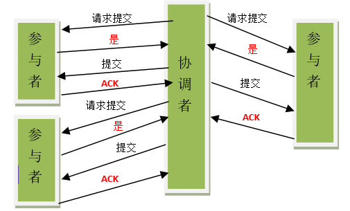
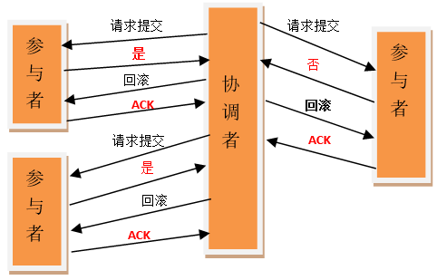
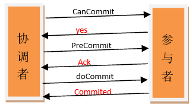

问题的提出
问题的提出： 分布式系统， 为了保证数据高可用， 我们会将数据保留多个副本。 这些副本会在不同的物理机器上。
我们需要保证这些不同物理机器上的副本是一致的。
为了保证这种一致性， 有机械经典的协议和算法。 二阶段提交， 三阶段提交， Paxos 算法。
- 分布式事务
以上问题就提出了分布式事务的问题。 每台物理机器自己是可以做到ACID的。 但是相互独立的节点无法准确知道其他节点的事务执行。 所以理论上讲， 两台机器理论上无法一致。
如果要保存一致， 就意味着， 要么全部执行， 要么全部不执行。
为了解决这个问题， 通常需要引入一个协调者， 来统一调度所有分布式节点的执行。
二段式
- 2PC Two phaseCommit
参与者将操作成败通知协调者，再由协调者根据所有参与者的反馈情报决定各参与者是否要提交操作还是中止操作。
第一阶段
- 1）协调者节点向所有参与者节点询问是否可以执行提交操作(vote)，并开始等待各参与者节点的响应。
- 2）参与者节点执行询问发起为止的所有事务操作，并将Undo信息和Redo信息写入日志。（注意：若成功这里其实每个参与者已经执行了事务操作）
- 3）各参与者节点响应协调者节点发起的询问。如果参与者节点的事务操作实际执行成功，则它返回一个”同意”消息；如果参与者节点的事务操作实际执行失败，则它返回一个”中止”消息。
第二阶段 提交阶段
如果协调者收到了参与者的失败消息或者超时，直接给每个参与者发送回滚(Rollback)消息；否则，发送提交(Commit)消息；参与者根据协调者的指令执行提交或者回滚操作，释放所有事务处理过程中使用的锁资源。(注意:必须在最后阶段释放锁资源)
分成功和失败两种情况讨论




存在的问题
关键是存在的问题
- 同步阻塞问题。
执行过程中，所有参与节点都是事务阻塞型的。当参与者占有公共资源时，其他第三方节点访问公共资源不得不处于阻塞状态。
-》这个肯定的。
- 单点故障。由于协调者的重要性，一旦协调者发生故障。参与者会一直阻塞下去。尤其在第二阶段，协调者发生故障，那么所有的参与者还都处于锁定事务资源的状态中，而无法继续完成事务操作。（如果是协调者挂掉，可以重新选举一个协调者，但是无法解决因为协调者宕机导致的参与者处于阻塞状态的问题）
-> 基本清楚， 就是如果协调者故障， 别的还在锁定状态。
单点问题：
- ==>协调者占据主导地位
- ==>一旦协调者出出现问题，那么整个事务则无法完成，尤其是在阶段二中出现问题，各个参与者所锁定的资源将无法释放。导致其他业务不能操作
- 数据不一致。在二阶段提交的阶段二中，当协调者向参与者发送commit请求之后，发生了局部网络异常或者在发送commit请求过程中协调者发生了故障，这回导致只有一部分参与者接受到了commit请求。而在这部分参与者接到commit请求之后就会执行commit操作。但是其他部分未接到commit请求的机器则无法执行事务提交。于是整个分布式系统便出现了数据部一致性的现象。
–》 这个问题清楚， 但是如何解决， 3PC 也解决不了吧
脑裂导致数据不一致：
==>如果分布式节点出现网络分区，某些参与者未收到commit提交命令。则出现部分参与者完成数据提交。未收到commit的命令的参与者则无法进行事务提交。整个分布式系统便出现了数据不一致性现象。
附录的一篇文件对具体的场景进行了分析。 就是说什么情况下数据不一致。
- 基本的结论是说 2PC协议中，如果出现协调者和参与者都挂了的情况，有可能导致数据不一致。
三段式
两点改动
- 明显的， 加了一步， 就是pre commit， 保证在提交之前状态一致。 这个解决了什么问题。 前面并没有提到
- 1）在2PC， prepare 每个节点都回答yes， 并做了操作， 而且把undo redo 放在了事务日志里面， 只是没有commit。 这里一分为二， 第一阶段说可以。 第二阶段再做操作。
- 引入了超时机制， 同时在协调者， 参与者引入了超时机制。
- 其实在第一个里面， 协调者也有超时， 但是这里呢对于参与者也加入了超时机制。


区别
- 相对于2PC，3PC主要解决的单点故障问题，并减少阻塞，因为一旦参与者无法及时收到来自协调者的信息之后，他会默认执行commit。而不会一直持有事务资源并处于阻塞状态。
-》因为到了第三阶段以前， 第一阶段必然执行完了， 也就是说所有都回答yes， 了， 所以 第二阶段大家都做完的可能性很大。 - 3PC 显然不会阻塞了， 因为有timeout了。 就这个区别。
3PC和2PC上超时判断的区别
2PC上只有协调者有超时判断
比如：在第二阶段事务提交时，协调者等待参与者反馈超时，会中断事务，因此被认为“保守”
3PC上参与者和协调者都有超时的判断
比如，对于参与者来说：在第三阶段doCommit时，参与者等待协调者发出commit或者abort响应超时，就执行了commit(概率事件，因为preCommit收到了Ack，认为大概率能够commit，因此解决了2PC“保守”的问题)
问题
当然 这种机制也会导致数据一致性问题，因为，由于网络原因，协调者发送的abort响应没有及时被参与者接收到，那么参与者在等待超时之后执行了commit操作。这样就和其他接到abort命令并执行回滚的参与者之间存在数据不一致的情况。
paxos
- 是什么 以及如何解决的问题
简单理解如何解决了上面的问题呢。
它引入了一个序列的概念， 就是我这个协调者发出去的时候是带一个序号的， 这样就能够在出问题的时候恢复可以知道自己是接收还是不接受了。
- 另外呢， 它还改变了所有人通过再成功的概念， 大多数人即可。 如果分治成了两部分， 也是总数的多个。 也是可以处理的
摘抄如下：
第一 – 除了三段提交我们还有什么更好的方法吗？唯一的问题是网络分隔，是吧？为了开始，让我们假设网络分隔是唯一的问题(事实上这不是唯一的问题，等一下我们会提到)。网络分隔的问题是否值得去解决？今天，云计算和英特网范围的服务，不同的服务器之间可能跨洋跨大陆，我们需要一个分区容忍性算法。
第二点网络分隔不是唯一的问题。 当我们着手处理阶段永久失败的情况，最常见的情况是服务器死机，然后从死掉的地方重新恢复。这种失败-恢复模型也可以描述一个节点回应消息无时间上限的异步网络模型，因为你不能假设一个节点死掉了 – 它们可能只是慢一点或者网络慢一点。在这个模型，你不能设置超时。
三段提交是失败-停止，但不是失败-恢复。不幸的是真实的需求往往要求失败-恢复，因此我们需要更通用的解决方案。这就是Paxos协议诞生的原因
Paxos – 实现原理
在Paxos中，最基本的步骤很像二段提交：
选择一个节点作为提议者
提议者选择一个值，然后发送给所有接受者。接受者可用回复拒绝或接受
一旦大多数节点接受提议，共识就达成了，协调者向所有接受者发送提交命令
和二段提交主要的不同是，不像二段提交需要所有节点同意，这样只需要大多数节点同意即可。这是个有趣的想法。这保证了在一个回合内，如果大多数节点同意了一个值，而后的任意节点尝试提议一个值的时候都会学习大多数节点同意的那个值。这也意味着 Paxos 不会阻塞，即使一小半节点响应失败。
当然协调者本身也可能失败。为了处理这个问题， Paxos 不会只指定一个协调者那么简单。它允许任何节点都可以成为协调者。两个协调者可能提议不同的值，那么怎么协调达成共识呢？为了解决共识达成一致的问题 Paxos 引入了两个机制：
分配一个序列号给协调者。 不同协调者的序列号不同，这样可以防止旧的协调者 (例如从失败中恢复过来的协调者) 对达成的共识有异议。
限定协调者的选值。一旦共识达成，Paxos 强制让后来的协调者选择已有的值，保证共识延续。这个可以通过让参与者发送自身同意的最新的值以及协调者的序列号来获得。新的协调者可以选择选择参与者返回的其中一个值，当没有任何参与者返回值的时候，就选择自己的值。
协议的步骤：
1) 准备阶段：
一个节点选择成为一个协调者，然后选择了一个序列号 x 和一个值 v 来建立一项提议 P1(x, v)。 它将这个提议发送给所有参与者，然后等待大多数参与者的响应。
参与者接收到了提议 P1(x, v1) ，然后做如下事情：
如果收到的是第一个提议，就回复 ‘agree’ – 它承诺会拒绝后来序列号 < x的所有请求
如果已经同意过某个提议：
将 x 和它同意过的最大的序列号的提议 P2(y, v2)对比
如果 x < y, 回复 ‘reject’ 和 y
如果 x > y, 回复 ‘agree’ 和 P2(y, v2)
2) 接受阶段
如果大多数参与者失败或者回复拒绝，协调者会抛弃提案然后重新开始
如果大多数参与者回复“同意”， 协调者也会接收到它们收到的提议的值。协调者拿到这些值任意一个 (如果还没有值被接受就用它自己的值) 然后发送一个“请接受我”的请求，这个请求会带上一个序列号和一个要提议的值。
当参与者接收到一个“接受请求”的消息，当满足下面的两个条件的时候，它会发送一个‘接受’ 消息， 否则会发送一个拒绝消息：
值和之前接受的任意值相同
序列号是参与者所接受所有值的最大值
如果协调者没有得到大多数参与者 ‘接受’ 的消息，它的提议将会被摒弃，重新开始一次事务。然而如果协调者没有得到大多数参与者的“接受”，事务可以终止了。为了优化，协调者可能发送 ‘提交’ 命令给其它节点
Paxos 处理失败
如果授权时Paxos只有一个协调者， 用授权来代替投票，所有节点都必须投票吗？你猜对了 – 二段提交就是这样的。 二段提交是Paxos的某个特殊情况。
如你所见， Paxos 比二段提交有更高的失败容忍性：
协调者失败 – 另外一个协调者可以代替它，提出自己的提议。
原来的协调者恢复 – 两个协调者可以同时存在，多亏了这个规则：只同意最大的序列号以及只能提交前一个同意的值
Paxos也比三段提交更具有容错性。特别地，Paxos的分区容忍性不同于三段提交。在三段提交，如果两个隔离的分区同意了一个值，当分区合并的时候，就会出现违反一致性的情况。在Paxos，这种情况是不会出现的，因为有大多数选票机制。除非一个分区有大多数参与者同意，否则不会达成一致。如果一个分区有大多数参与者同意能够达成一致，这个值会被其它分区采取。
Paxos的一个问题是两个协调者，不能互相观察，当有分区隔离的时候，可能会尝试提出一个比前一个提议更高的序列号的提议。这会导致Paxos事务永远不会休止（成为活锁）。尽管两个协调者期望观察另外一个，并且其中一个需要退出。
这是个安全和可用性之间的平衡。Paxos是一个安全的算法 – 一旦共识达成，被同意的值不会改变。然而 Paxos不保证可用性 – 在某些很少的情况下它会终止。事实上一个异步的一致性算法不能同时保证安全和可用性，这被称为 FLP 不可能结果.